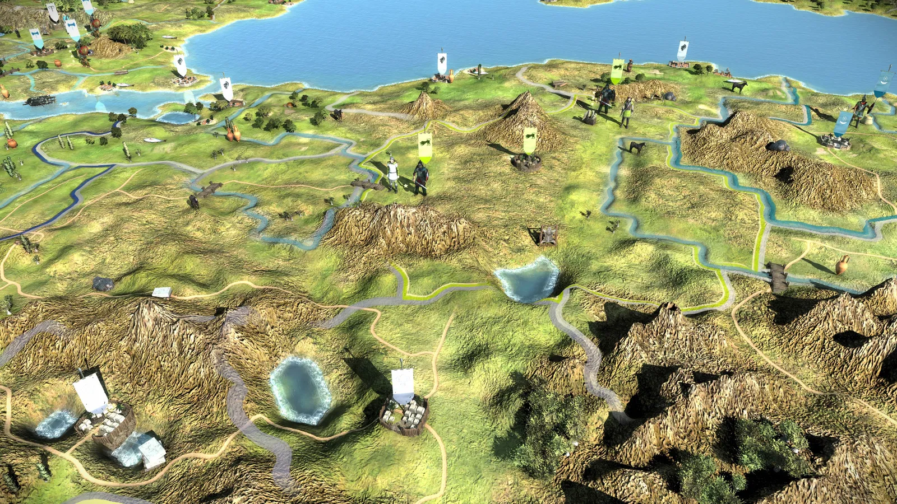
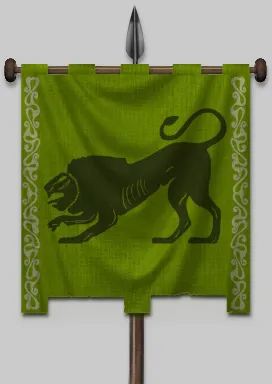
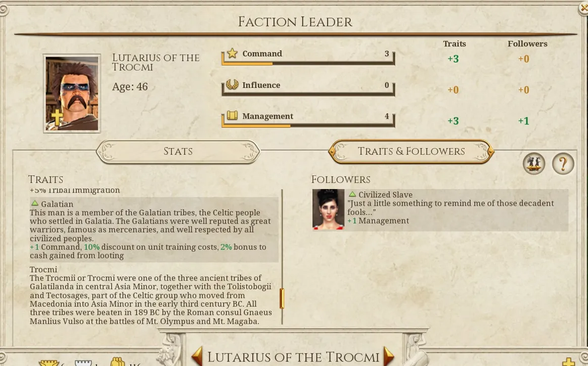
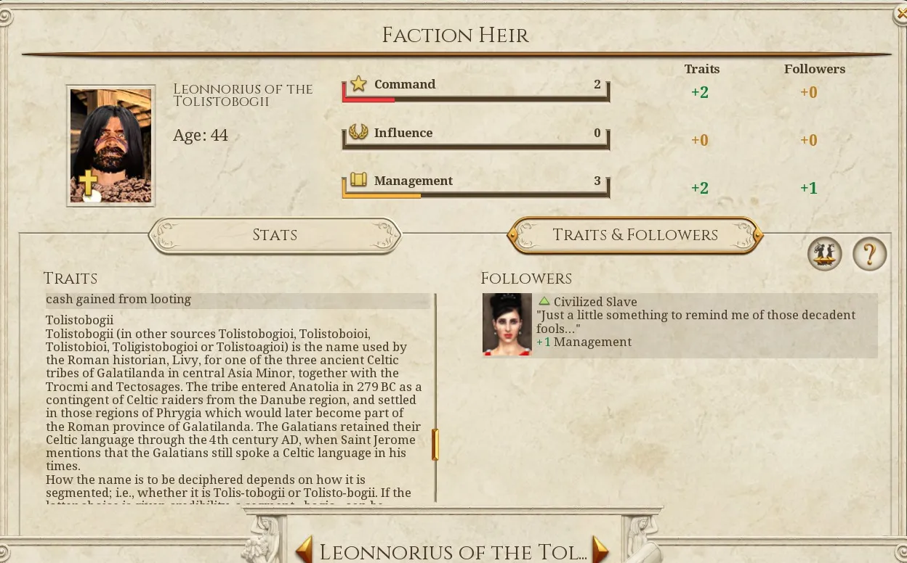

RTR: Imperium Surrectum
RTR: Imperium SurrectumThe Galatians
2021-11-23 · Tarnholm
"The Celts rushed at their enemies like wild beasts, full of rage and temperament, with no kind of reasoning at all, and the blind fury never left them while there was breath in their bodies; even with arrows and javelins sticking through them they were carried on by sheer spirit while their life lasted." – Pausanias
At the camp fires, the elders often tell us the stories of the migrations of the Celtic people as they spread over the known world and took their rightful place among the peoples of the Mediterranean. Our oldest ancestors lived a simple and free life on the banks of the great rivers Rhine and Danube. From there, however, large groups of men, women, and children moved to seek new land when they outgrew their small and narrow home countries. Some of these great migrations ended in peaceful settlements of new lands, but in other cases the incoming tribes had to conquer their new homes by sword.
Our tribesmen are the superiors of all others in bravery, sword-skill and weaponry, and thus secured fertile lands to call our own. The stories of these events have been passed down the generations by oral tradition, whilst our common language still bonds us with our Celtic brethren who live far away in our ancient homeland. In the course of time, we colonised vast areas in the North and the West, and only a few hundred moons ago we began to push into the rich world of the Greeks. There we were called "Barbarians" because they could not understand our language. Yet, soon we had taught them fear and became the nightmare of the entire Hellenic world.
Only Alexander the Great, a mighty king from the Northern upland of Macedon, stopped our ancestors from moving further south. His successors succeeded in continuing this for a further two generations before several tens of thousands of warriors invaded Hellas under the powerful Brennus, and instilled the Greek civilisation with fear. The impetuous Ptolemaios Keraunos, who vainly styled himself successor of the great Alexander, was thrown off the ferocious beast he tried to ride but that he controlled even worse than he could lead his army. The fool was captured and slain by the great Bolgios, who carried his head around the battlefield on a spear! The Hellenes, however, were eventually able to defeat our ancestors in an insidious and honourless way, and so divided the hordes of the Celts. Some settled down in rough Thrace, where they founded the empire of Tylis, which has incessantly tormented the Greek cities on the Black Sea with their raids ever since.
Our fathers, however, were admitted into the service of wealthy kings from the countries beyond the sea of Byzantion, and happily joined in the wars for power in the eastern empires that led to much further bloodshed among these scheming Greeks. Now, we have a new future for our great people in the heart of the region that is called Asia – or used to be described that way by the Greeks who lived here before we made them our slaves! From Ankyra, our new capital, we Galatians plundered the rich cities of this land that we will make our own. We will surely continue to be recruited as mercenaries by the tyrant leaders of our weak neighbours, as our ferocity and prowess in battle remain second to none! Our men contempt death, and thus nothing can stop them – they may hate us, as long as they rightfully fear us!"
Welcome to a brand new developer diary! I know the wait has been long but I can assure you that the wait has been worth it. As you might have gathered from the text above this diary is all about our brand new Galatian faction. We have already been including the Galatians in RIS since launch in the form of Gallic-owned settlements in Anatolia. However, this was never a perfect system. Factions split up like that never act as well as when separated into two and thus we decided to grant one of the faction slots we had at hand to the Galatians. Now, what's so special about the Galatians? We choose them because they are a very uniquely situated faction. The story of the Galatians begins with a great Celtic host led by Brennus that set out to ravage Greece and sack the treasures of Delphi. The host had initial success but was eventually defeated at Delphi and in the aftermath, Brennus took his own life. A part of the host under command by Leotarios and Leonnorios crossed the straits of Bosphorus and after plenty of raiding settled in central Anatolia around what we know as Ankara and became known as the Galatians. The Galatians were known as fearsome warriors and were thus often employed by the successor states in their internal struggle with Alexander's legacy. When not employed they often raided their neighbors and forced them into paying large sums of tribute. Now that we know a little about the back story let's have a look at their starting situation in RIS:

Starting with the sole settlement of Ankyra and with enemies all around the Galatians are in for a tough start. Will, your first goal be the free city of Herakleia Pontike along the coast or will you head inland towards the city of Mazaka or maybe boldly bring war against the Pontus, Seleucids, and even the Ptolemies? Some may even choose to return across the Bosphorus straits to Europe! Only one thing is certain and that is that you will have to fight to survive as the Galatians. Tone has as always created some amazing art for the faction. Here are the banner and faction symbol:

We also added some new traits for the Galatians:


We at RIS hope you all will enjoy playing as our new fearsome Celtic nation in our upcoming 0.3.0 release!
just an fyi, Galatians are only the 18th faction. 😁